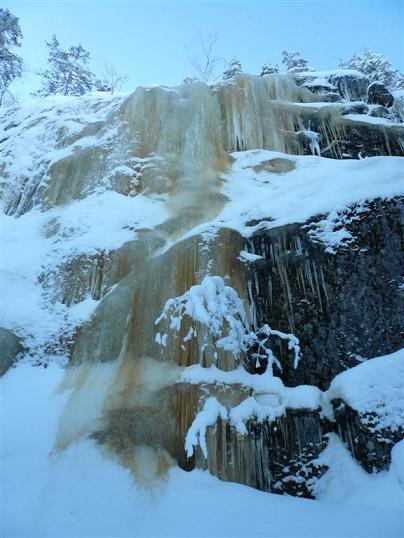
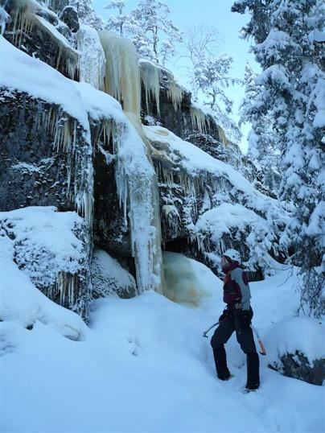
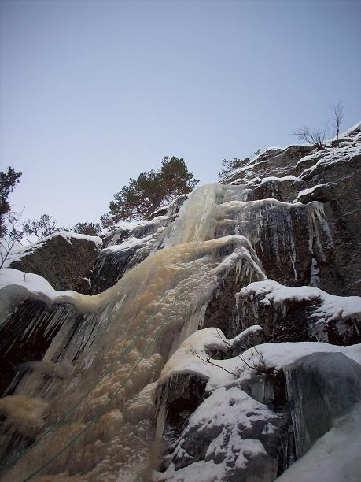

Nedansjöisarna är fint belägna på nordsidan av Skölesklevarna med vy utöver dalgången där älven Ljungan flyter igenom. Under normala förhållanden sträcker sig säsongen från början av december till slutet av mars.
För aktuellt isläge/övriga frågor kontakta
.
Sväng av E14 mot Matfors, kör över Ljungan och 700m senare ta höger precis innan vägbron(skyltat mot stöde). Kör 200m och ta höger i T-korset, följ sedan vägen 5.2km och berget syns nu tydligt på vänster sida, du kör ner för en backe och passerar en stor äng. Målet är nära! Ta nu första vägen till vänster som går vinkelrätt mot berget. OBS! vägen är inte alltid plogad och i sådant fall kan parkering ske vid infarten men tänk på att parkera så att en ev plogbil/markägare kan passera. Om du nu är en lyckans ost och vägen är plogan fortsätt då ytterliggare 300m tills dess att vägen tar en skarp högersväng. Här kan det vara lämpligt att parkera bilen då markägaren brukar ploga extra brett. Finns oftast en liten vändplan plogad 400m längre fram längs vägen och om inte får man tillfälle att träna på att framför bilen i andra färdriktningen.
Anmarschen är 300-600m (beroende på vart man kan parkera). Strax efter den skarpa högersvängen(där ni för hoppningsvis kunde parkera) går det upp en stig/skogsmaskinsspår åt vänster. Följ denna över bäcken tills dess att stigen tar slut(ca 250m), gå nu rakt upp mot berget genom skogen och håll något till vänster efter ca 150m borde ni se stor fallet tydligt (eller följ ev. upptrampad stig).
Inga accessproblem föreligger för tillfället, men när ni parkerar se till att inte hindra ev. passerade trafik.
  Kategori:Medelpad
Kategori:Saknar koordinater
Kategori:Saknar karta